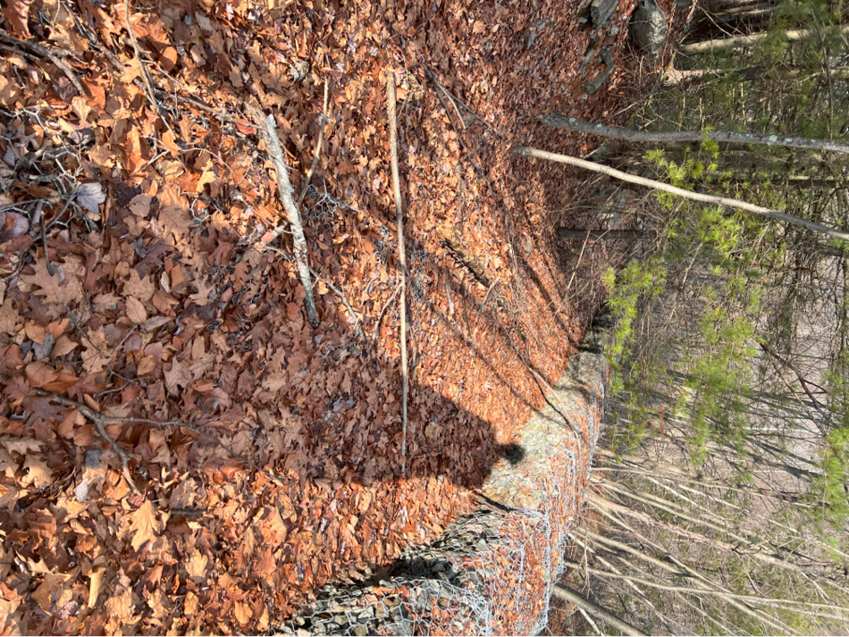

23
Shooting pond at AOC #1, view near shoreline

23
Shooting pond at AOC #1, view near shoreline
24
Whether the shape of an impacted rock in this barren expanse is meteoric or mechanic in origin is unclear. Scrubby pitch pines spring up between the cracks, known for colonizing areas of poor nutrition, and locally for dotting our few bald ridgelines. The scene can be characterized as the natural result of neglect, but in reality, was designed; Chosen as a site of disposal, the hillside became a hole.
Descend the crags to the water level, being careful not to touch any carcinogenic water at its primary source. Some old barrels laze on the surface of the water, adding to the heavy metal content of the pond as they corrode further. Ashore, next to half of a rusted pipe positioned temptingly downslope like a slide, the corrugated steel cover of a metal borehole rises from the rock like an oversized screw.
From this vantage, the deep fissure through the center of the depression is clear, but the cause of it is not. In this otherworldly wasteland, it seems strange to think that plate tectonics would create such a linear feature, and we may never know whether that process or DuPont’s disposal methods contributed more to the shape and skew of this geological mixing bowl. In an early attempt at casting my concrete model of this pond, the landscape cracked precisely along this crevice in the landscape.
Near the water, the gabions continue, paralleling a woods road heading downhill. In some sections, they’re placed in the roadbed, so you may be forced to walk on them.
